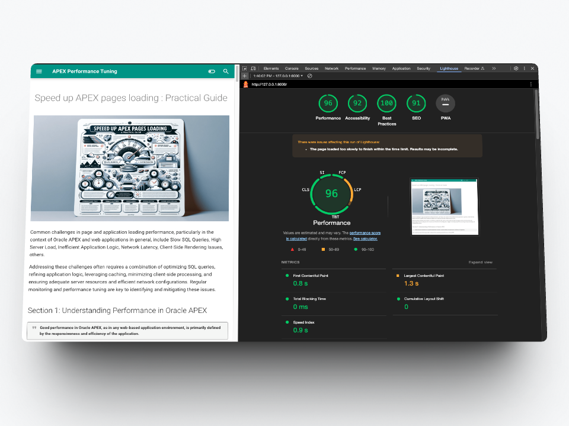

Speed up APEX pages loading : Practical Guide

Common challenges in page and application loading performance, particularly in the context of Oracle APEX and web applications in general, include Slow SQL Queries, High Server Load, Inefficient Application Logic, Network Latency, Client-Side Rendering Issues, others.
Addressing these challenges often requires a combination of optimizing SQL queries, refining application logic, leveraging caching, minimizing client-side processing, and ensuring adequate server resources and efficient network configurations. Regular monitoring and performance tuning are key to identifying and mitigating these issues.
Section 1: Understanding Performance in Oracle APEX
Good performance in Oracle APEX, as in any web-based application environment, is primarily defined by the responsiveness and efficiency of the application.
Here are the key aspects that are generally considered when evaluating good performance in Oracle APEX:
-
Fast Page Load Times: Slow page load times can lead to a poor user experience and may cause users to abandon the application.
-
Efficient Database Interactions: This includes optimized SQL queries that return results quickly and efficiently, appropriate indexing, and effective use of PL/SQL to handle business logic.
-
Minimal Server Resource Usage: This includes optimal use of memory, CPU, and disk I/O. Efficient use of resources ensures that the application can handle a higher number of concurrent users without degradation in performance.
-
Responsive User Interface (UI): The UI should be responsive and interactive, providing immediate feedback to user actions. This involves efficient use of AJAX, JavaScript, and HTML/CSS to create a smooth and dynamic user experience.
-
Scalability: A well-performing APEX application should be able to maintain its responsiveness as the number of users grows.
-
Low Latency in Network Communications: The time taken for data to travel across the network between the client and the server (and back) should be minimal. Network latency can significantly affect the perceived speed of an application.
-
Effective Error and Exception Handling: This includes providing useful error messages to users and ensuring that one user’s problematic request does not impact the performance for others.
-
Consistency Across Different Browsers and Devices: The application should perform consistently across different web browsers and devices, providing a similar level of responsiveness and efficiency.
-
Minimal Bottlenecks and Locks: Particularly in database operations. This ensures that multiple users can interact with the application simultaneously without encountering significant delays or locks.
-
Regular Monitoring and Optimization: Continuously monitoring application performance and regularly optimizing based on the insights gained is a part of maintaining good performance. This proactive approach helps in identifying and rectifying potential performance issues before they impact the users.
In summary, good performance in Oracle APEX is characterized by fast, efficient, scalable, and consistent application behavior that provides a seamless and responsive user experience.

Section 2: Identifying Performance Problems
Using diagnostic and monitoring tools in Oracle APEX is essential for identifying and addressing performance issues. Here’s a guide on how to effectively utilize these tools:
APEX Advisor:
Purpose:The APEX Advisor checks for best practices, security issues, and potential performance problems in your application.How to Use:Navigate to the “App Builder”, select your application, and choose “Utilities” from the right-hand sidebar. Then, click on “Advisor” to run it. It will report issues categorized by severity, allowing you to focus on critical problems first.
In the Performance section you will find references to the use of the V function. You can get more details in Michelle's blog 15 Top Tips to tune your Oracle APEX Performance where she proposes the best alternatives to replace the use of this function.
Debugging:
Purpose:Debugging allows you to trace the execution of your application, showing the steps it takes and how long each step takes.How to Use:To enable debugging, add debug=YES to the end of your application URL or click the “Debug” option within the App Builder. Review the debug reports in the “View Debug” option under the developer toolbar to identify slow-running pages or processes.
Page Performance:
-
Purpose:Page performance helps in understanding the time taken for various components of a page to load. -
How to Use:This feature can be accessed from the developer toolbar in run-time. It provides a breakdown of timing for SQL queries, PL/SQL processes, page rendering, etc.
When auditing a page, Lighthouse runs a barrage of tests against the page, and then generates a report on how well the page did. From here you can use the failing tests as indicators on what you can do to improve your app.
Application Logs:
-
Purpose:Application logs record various events and errors that occur within your application. -
How to Use:Regularly review these logs (accessible via the App Builder) for any anomalies or errors that could be impacting performance. You can find relevant information on this subject in Michelle's blog 15 Top Tips to tune your Oracle APEX Performance in point 2 View the Activity Monitor.
Monitoring Database Performance:
-
Purpose:Monitoring the underlying Oracle database is crucial for overall application performance. -
How to Use:Utilize Oracle database tools like Automatic Workload Repository (AWR) reports, Active Session History (ASH), and SQL Monitoring for in-depth analysis.
Some of these functionalities could require Enterprise Edition and the Diagnostics and Tuning option. Make sure you have the correct licensing before using this functionality.
Utilizing Third-Party Tools:
-
Purpose:There are several third-party tools and services that can be integrated with Oracle APEX to provide additional monitoring and diagnostics. -
How to Use:Tools like Oracle Enterprise Manager (OEM), New Relic, or SolarWinds can provide comprehensive monitoring capabilities.
Real-Time SQL Monitoring:
-
Purpose:For real-time monitoring of SQL query performance. -
How to Use:This can be accessed via Oracle Enterprise Manager (OEM) or SQL Developer. It provides detailed metrics on SQL execution, which is crucial for tuning complex queries.
Automated Health Check Reports:
-
Purpose:To provide an overview of the health and performance of your APEX environment. -
How to Use:Health Checks Service can be scheduled or run ad-hoc and offer insights into system health, potential bottlenecks, and areas for optimization.
Remember, the key to effective use of these tools is regular monitoring and not just when issues arise. Proactive monitoring helps in identifying potential performance issues before they become critical, allowing for a more stable and efficient APEX application.
- Identifying common symptoms of performance problems (slow load times, late server responses, etc.).
Section 3: Page Load Performance Improvements
SQL and PL/SQL query optimization techniques.
Optimizing SQL and PL/SQL queries is crucial for improving the performance of Oracle APEX applications. Here are some key techniques for SQL and PL/SQL optimization:
Use Bind Variables:
-
Why:Bind variables reduce parsing overhead and improve query execution speed. -
How:Replace literals in SQL queries with bind variables. For instance, instead of:
use
Optimize SQL Queries:
Why:Efficient SQL queries reduce load on the database.How:Avoid SELECT * and specify only needed columns. Use WHERE clauses to filter data effectively. Join tables efficiently - avoid unnecessary joins.
Use Indexes Wisely:
Why:Indexes speed up data retrieval but should be used judiciously.How:Create indexes on columns used in WHERE, JOIN, and ORDER BY clauses.
Be cautious about over-indexing, as it can slow down DML operations (INSERT, UPDATE, DELETE).
Avoid Unnecessary PL/SQL:
Why:Excessive use of PL/SQL for operations that can be done via SQL can lead to performance issues.How:Use SQL for data manipulation and retrieval where possible, and reserve PL/ SQL for business logic and operations that cannot be efficiently done in SQL.
Optimize PL/SQL Code:
Why:Well-optimized PL/SQL code executes faster and uses fewer resources.How:Use bulk operations (BULK COLLECT and FORALL) to process large datasets. Avoid excessive use of context switching between SQL and PL/SQL. Minimize the use of dynamic SQL and ensure it’s properly optimized.
Use Execution Plans:
Why:Understanding execution plans helps identify inefficient parts of the query.How:Use tools like EXPLAIN PLAN or SQL Developer to analyze how your SQL queries are executed and optimize based on the findings.
Use SQL Functions Appropriately:
Why:Misuse of functions can lead to performance degradation.How:Avoid applying functions on indexed columns in WHERE clauses, which can prevent the use of indexes.
Optimize Data Model:
Why:A well-designed data model provides a foundation for efficient queries.How:Normalize data where appropriate, but consider denormalization in some cases for performance.
Leverage Oracle Features:
Why:Oracle provides several features to enhance query performance.How:Use features like materialized views, partitioning, and advanced indexing techniques.
Regularly Gather Statistics:
Why:Up-to-date statistics help the Oracle optimizer choose the most efficient execution plans.How:Regularly gather statistics on tables and indexes.
Tune Subqueries and Joins:
Why:Poorly optimized subqueries and joins can be performance bottlenecks.How:Rewrite subqueries as joins (or vice versa) based on which is more efficient. Use EXISTS instead of IN for subqueries when appropriate.
Avoid Loop-Dependent Queries in PL/SQL:
Why:Queries inside loops can significantly degrade performance.How:Minimize database calls within loops, and use collections and bulk operations to process data sets.
Remember, optimization is often about trade-offs, and the best approach can depend on the specific context and data patterns. Regularly monitoring and profiling your application will help identify areas where SQL and PL/SQL optimization can have the most significant impact.
Tips for efficient session and state management in APEX
Efficient session and state management is crucial in Oracle APEX for maintaining good application performance and ensuring a seamless user experience. Here are some tips to manage session state effectively in APEX:
Minimize Session State Writes:
Why:Excessive writes to session state increase the load on the database.How:Only save essential items to the session state. Avoid unnecessary updates to session state items.
Use Application Items Wisely:
Why:Application items are stored in session state but are shared across all pages in an application.How:Use application items for data that is common across the application and doesn't change frequently.
Optimize Item Settings:
Why:Proper configuration of page items affects performance.How:Set the “Source Used” property appropriately to control when item values are loaded from the database. Avoid “Always, replacing any existing value in session state” unless necessary.
Leverage Browser Caching:
Why:Reducing server requests for static resources enhances performance.How:Use browser caching for static files like images, CSS, and JavaScript. Set appropriate cache control headers.
Implement Conditional Processing:
Why:Conditional processing reduces unnecessary computations and data loading.How:Use conditions on items, regions, buttons, and processes to render or execute them only when necessary.
Manage Session Timeout:
Why:Proper session management helps in resource allocation and security.How:Set a reasonable session timeout value based on your application's nature and usage pattern.
Clear Session State Appropriately:
Why:Timely clearing of session state can release resources and enhance performance.How:Use built-in APEX procedures to clear session state when it’s no longer needed, such as after a user logs out or completes a transaction.
Use Server-Side Conditions Effectively:
Why:Server-side conditions can prevent unnecessary execution of code.How:Apply server-side conditions on PL/SQL processes and regions to ensure they execute only under specific conditions.
Optimize Computations and Validations:
Why:Efficient computations and validations ensure quicker page processing.How:Write efficient PL/SQL code for computations and validations, and avoid redundant validations.
Leverage AJAX for Partial Page Refreshes:
Why:AJAX calls can update parts of a page without a full page reload.How:Use Dynamic Actions with AJAX Callbacks to update specific page regions or items, reducing the need to refresh the entire page.
Utilize On-Demand Processes:
Why:On-demand processes load data only when required.How:Use On-Demand processes for loading data into items or regions when they are accessed or under specific conditions.
Profile Session State Usage:
-
Why:Understanding how your application uses session state can reveal optimization opportunities. -
How:Regularly review the session state usage and data volume. Tools like APEX Debug and the APEX Advisor can help in this analysis.
By following these tips, you can efficiently manage session and state in Oracle APEX, which contributes to better performance, especially in applications with a large number of users or complex data interactions.
Section 4: Application Performance Optimization
Strategies for effective management of server resources.
Effective management of server resources is crucial for the optimal performance of Oracle APEX applications, as well as for any server-based applications. Here are several strategies that can be particularly effective:
Load Balancing:
-
Distribute incoming network traffic across multiple servers to ensure no single server bears too much load. This improves responsiveness and increases availability. Efficient Use of Hardware Resources:
-
Regularly monitor and optimize the use of CPU, memory, and disk resources. Upgrade hardware or scale resources as needed based on the application's requirements and usage patterns.
Database Optimization:
- Optimize the Oracle database which is at the heart of APEX applications. This includes efficient indexing, partitioning large tables, optimizing SQL queries, and regular maintenance like gathering statistics.
Application Caching:
- Implement caching mechanisms to store frequently accessed data in memory, reducing the number of times data needs to be read from the disk or database.
Session Management:
- Efficiently manage user sessions to minimize server load. This includes setting appropriate session timeouts and clearing session states that are no longer needed.
Regular Monitoring and Maintenance:
- Continuously monitor server performance metrics. Use tools like Oracle Enterprise Manager (OEM) for comprehensive monitoring and setup alerts for unusual activities.
Scalability Planning:
- Design the server infrastructure with scalability in mind. Consider using cloud services or clustered environments that can be scaled up or down based on demand.
Use of Content Delivery Networks (CDNs):
- For applications that serve users globally, use CDNs to cache content in different geographical locations, reducing load times and server load.
Tips for effective use of AJAX and JavaScript in APEX.
Effectively using AJAX (Asynchronous JavaScript and XML) and JavaScript in Oracle APEX can greatly enhance the user experience by enabling dynamic content loading and interactive features without the need for full page refreshes. Here are some tips for using these technologies effectively in APEX:
-
Use Dynamic Actions for Client-Side Interactivity: APEX's Dynamic Actions provide a declarative way to define client-side behavior. Use them for actions like showing or hiding page elements, setting field values, or executing custom JavaScript code based on user interactions.
-
Minimize AJAX Calls: While AJAX is powerful, overuse can lead to performance issues. Only use AJAX calls when necessary, such as for loading or submitting data asynchronously.
-
Optimize JavaScript Code: Write efficient and clean JavaScript. Avoid inline scripts scattered throughout the application; instead, organize scripts in external files or APEX’s JavaScript sections for better maintainability.
-
Use APEX JavaScript APIs: Utilize APEX’s built-in JavaScript APIs for common tasks. These APIs are optimized for APEX and can simplify development.
-
Implement Proper Error Handling in AJAX: Always include error handling in your AJAX calls to manage exceptions and provide informative feedback to the user.
-
Debounce AJAX Calls: For actions like search-as-you-type, use debouncing to limit the number of AJAX calls made. This improves performance by reducing the server load.
-
Utilize Partial Page Refresh: Refresh only parts of the page that need updating rather than the whole page. This can be easily achieved with Dynamic Actions and is more efficient.
-
Cache AJAX Responses When Appropriate: If the data fetched via AJAX doesn't change often, consider caching the response to improve performance.
-
Ensure Cross-Browser Compatibility: Test your JavaScript and AJAX implementations across different browsers to ensure consistent behavior.
-
Avoid Blocking the UI: Use asynchronous AJAX calls to prevent blocking the user interface while the request is being processed.
-
Leverage Browser Developer Tools: Use browser developer tools for debugging and optimizing your JavaScript and AJAX code.
-
Compress JavaScript Files: Minify and compress JavaScript files to reduce their size, leading to faster page load times.
-
Use Event Delegation for Dynamic Content: If you're adding content dynamically to the DOM, use event delegation to handle events on these elements, since directly bound events won’t work on newly added elements.
-
Implement Responsive Design Practices: Ensure your AJAX and JavaScript implementations work well in a responsive design, especially when dealing with different screen sizes and mobile devices.
Best practices in application design for optimal performance.
Designing applications for optimal performance involves considering various aspects, from the initial architecture to the implementation details. Here are some best practices for application design, particularly relevant to Oracle APEX but generally applicable to most web applications:
Efficient Database Interaction: Design your database schema wisely with proper indexing and normalization. Use efficient SQL queries and optimize PL/SQL code. Minimize the number of database calls and use bind variables to reduce parsing.
Optimize Page Design: Limit the number of items and regions on a page to reduce rendering time. Use AJAX to load data asynchronously and dynamically. Implement pagination in reports to limit the amount of data loaded at once.
State Management: Minimize the use of session state where possible. Be judicious in the use of application items and global variables.
Use of Caching: Implement caching strategies for static resources and frequently accessed data. Consider using browser caching and APEX’s built-in caching features.
Responsive and Efficient UI: Use APEX’s built-in themes and templates for a responsive design. Optimize JavaScript and CSS usage, and minimize their size.
Minimize Network Traffic: Compress data transferred between the server and client. Use CSS sprites and image optimization to reduce the number of HTTP requests.
Load Balancing and Scalability: Design your application to work in a load-balanced environment. Ensure your application can scale horizontally to handle increased load.
Security: Follow security best practices to protect your data and users. Regularly update your APEX environment and Oracle database to the latest versions.
Performance Testing: Regularly test your application’s performance under load. Use tools like Oracle APEX’s Advisor to identify potential performance issues.
Code Organization and Maintenance: Keep your codebase organized and well-documented. Regularly refactor and update your code to improve performance and maintainability.
Monitoring and Logging: Implement logging and monitoring to keep track of performance metrics. Use tools like Oracle Enterprise Manager (OEM) for comprehensive monitoring.
User Experience: Design with the user in mind, ensuring that the application is intuitive and easy to use. Gather feedback from users for continuous improvement.
Background Processing: For long-running processes, consider moving them to background jobs.
Error Handling: Implement robust error handling to manage and log exceptions without degrading the user experience.
These practices are not exhaustive but provide a solid foundation for designing and developing high-performing applications in Oracle APEX and other web-based platforms. Each application is unique, so these practices should be adapted to fit specific needs and contexts.
Section 5: Performance Troubleshooting
Steps for troubleshooting common performance problems.
Troubleshooting performance problems in web applications, including those built with Oracle APEX, typically involves several key steps. These steps help in identifying the root cause of the issue and formulating an effective solution. Here's a structured approach:
-
Define the Problem: Clearly identify the symptoms and the conditions under which the performance issue occurs. Is it happening across the application or only on specific pages or functions?
-
Replicate the Issue: Try to replicate the issue in a controlled environment. This can help in understanding the exact scenario in which the problem occurs.
-
Monitor and Gather Data: Utilize monitoring tools to gather data. This includes server performance metrics (CPU, memory usage), database performance (slow queries, locks), and network performance. In Oracle APEX, use the built-in monitoring tools and logs to gather information.
-
Analyze the Data: Look for patterns or anomalies in the collected data. Compare the performance metrics against expected behavior to identify any deviations.
-
Identify Bottlenecks: Narrow down the potential causes. Is the issue related to the database, application server, network, or client-side processing? For database issues, examine execution plans of slow-running queries. For application issues, review the application code, particularly any recent changes.
-
Check Resource Utilization: Ensure that the server has adequate resources (CPU, memory, disk space, network bandwidth). Check for any resource-intensive processes that might be consuming an excessive amount of resources.
-
Review Application Configuration: Verify that the application is configured correctly. This includes checking database connections, application settings, and any third-party integrations.
-
Test in Different Environments: Test the application in different environments (browsers, networks, devices) to see if the issue is environment-specific.
-
Implement and Test Fixes: Based on your findings, implement potential fixes. This might involve optimizing SQL queries, refactoring code, adding indexes to the database, etc. Test the changes in a non-production environment before rolling them out.
-
Evaluate the Impact: After implementing fixes, reassess the application's performance to determine if there's been an improvement. Continue to monitor the application closely to ensure the problem is resolved.
-
Document and Learn: Document the issue, the investigative process, and the solution. This can be valuable for addressing similar issues in the future. Share the findings and solutions with your team to broaden collective knowledge.
-
Seek External Help: If you're unable to resolve the issue, consider reaching out to external experts, forums, or Oracle support.
Remember, performance troubleshooting often requires a methodical approach and sometimes a bit of trial and error. It's important to isolate changes and test systematically to understand the impact of your modifications.
Conclusion:
In conclusion, optimizing performance in Oracle APEX involves a multifaceted approach that addresses various aspects of application development and deployment.